Анализы готовы
ВАРИАНТ 01Больше воздуха
Документ чуть меньше и ближе к центру. Силуэт целиком читается внутри круга.

Анализы готовы
ВАРИАНТ 02Матовое стекло
Светлая поверхность отделяет документ от шара. Положение и обрезка сохранены.

Анализы готовы
ВАРИАНТ 03Больше глубины
Небольшой наклон вправо, светлее верхняя грань и мягкая тень за документом.
Выбран вариант 02 — матовое стекло. Дуги активности, размер визуала и подпись сохранены.